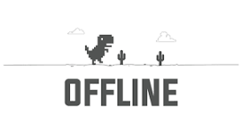

Thendral

you can't play this game without internet in this website
this is my first website
Offline Dino Runner
Offline Dino Runner
Use
Space
or
Up
to jump. Tap the screen to jump on mobile. Avoid cacti — survive as long as you can!
Score: 0
High: 0
Pause
Restart